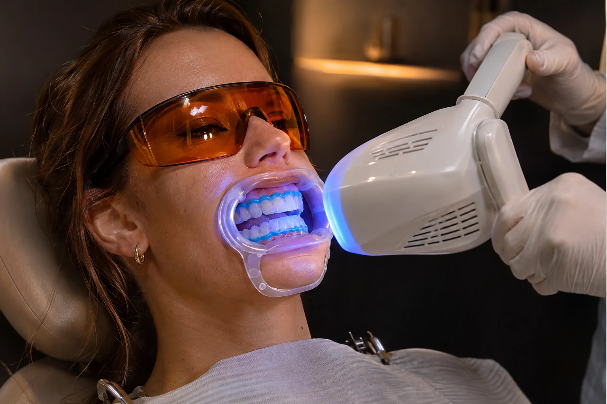
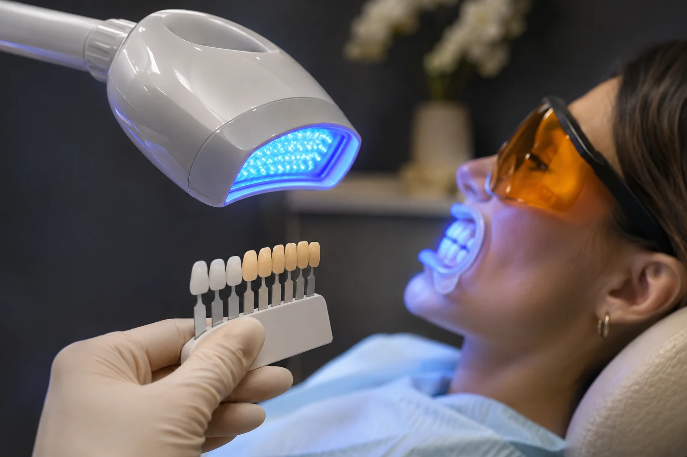
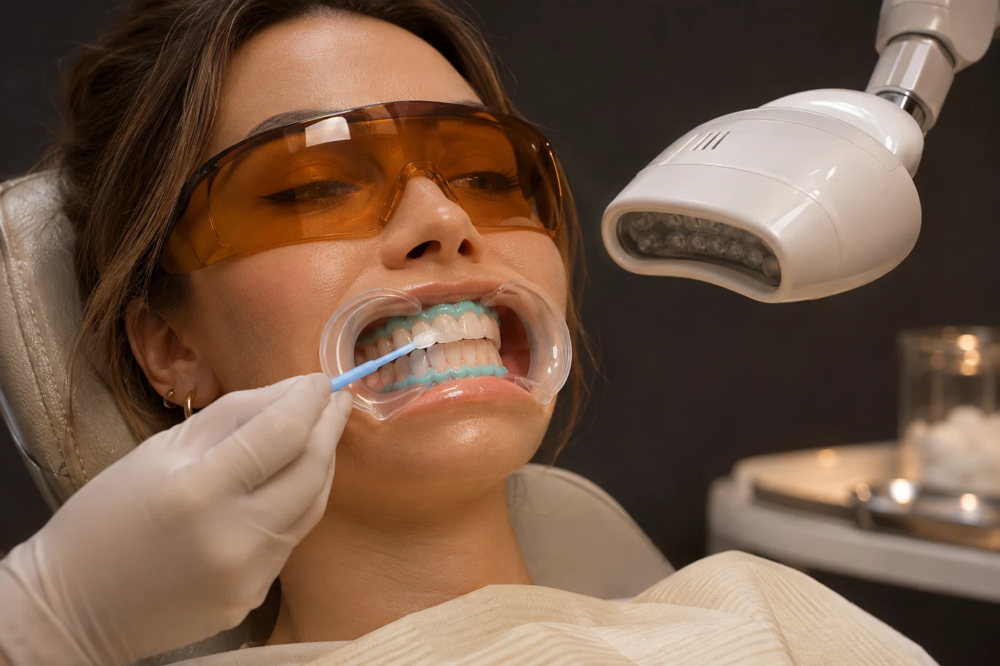
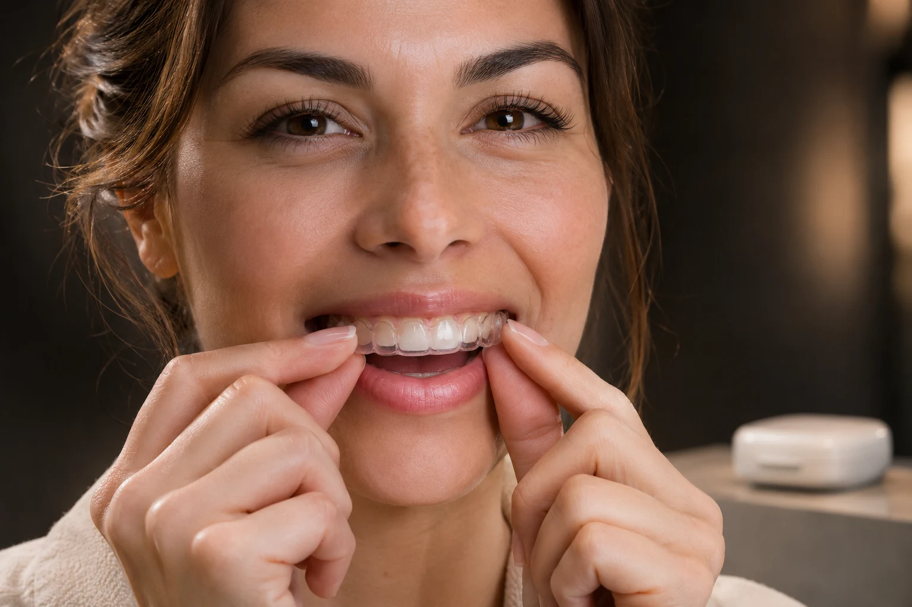

01 · FLASH WHITENING

Slug: flash-teeth-whitening-baku · Reading Time: 4 мин
Status: Draft · Is Active: выключено · Published At / Sort: не заданы
Is Featured / Is Secondary Featured: выключено
Cover Image: 01-whitening-v2.webp
Blog Posts ID: выберите созданную родительскую запись при добавлении перевода
Обложка WebP · Все поля + три перевода JSON
Отбеливание зубов Flash: современный способ обрести белоснежную улыбку
Поля перевода · Русский
- Language
- ru
- Title
- Отбеливание зубов Flash: современный способ обрести белоснежную улыбку
- Excerpt
- Как проходит отбеливание зубов Flash в клинике, сколько занимает процедура и какого результата можно ожидать. Объясняем, кому подходит этот метод.
- SEO Title
- Отбеливание зубов Flash в Баку | BeSmile
- SEO Description
- Профессиональное отбеливание зубов Flash в BeSmile, Баку: как проходит процедура, сколько длится сеанс, кому подходит и какого результата можно ожидать.
- Alt (метаданные файла)
- Кабинетное отбеливание зубов с LED-лампой и защитными очками
Content HTML · RU · Translation JSON
Светлая улыбка привлекает внимание, когда выглядит гармонично: сохраняет естественную прозрачность зубов и сочетается с внешностью. Если привычного ухода уже недостаточно, чтобы освежить оттенок, можно обсудить со стоматологом профессиональное отбеливание зубов. В BeSmile для этой задачи используется система Flash.
Отбеливание зубов Flash — кабинетная процедура, которую врач планирует после осмотра. Её задача — сделать натуральные зубы светлее, учитывая исходный цвет, причину потемнения и чувствительность. Ни название системы, ни фотография чужой улыбки не определяют ваш будущий результат.
Как работает технология Flash?
Flash, также известная как fläsh, — система профессионального отбеливания производителя WHITEsmile. В кабинетном протоколе применяются специальный гель и светодиодная лампа. Отбеливающее вещество воздействует на окрашенные соединения внутри тканей зуба, изменяя их цвет. Лампа используется в соответствии с инструкцией к системе; это не лазерная обработка и не механическое снятие эмали.
Отбеливание и профессиональная чистка решают разные задачи. Чистка удаляет налёт, зубной камень и поверхностные пигменты. Отбеливание изменяет оттенок натуральных тканей. Иногда уже после гигиены улыбка выглядит заметно свежее, и врач вместе с пациентом заново оценивает необходимость следующего этапа.
Как проходит процедура в клинике?
- Консультация. Стоматолог выясняет, что именно не устраивает в цвете зубов, спрашивает о прошлых процедурах и реакциях на холодное.
- Осмотр. Врач проверяет зубы, дёсны, состояние пломб и участки, которые могут стать источником дискомфорта. При необходимости сначала проводят лечение и гигиену.
- Согласование оттенка. Исходный цвет фиксируют, чтобы оценивать изменения в сопоставимых условиях.
- Защита и отбеливание. Врач изолирует мягкие ткани, обеспечивает защиту глаз, наносит гель и проводит предусмотренные протоколом циклы, контролируя ощущения.
- Завершение. Гель удаляют, оценивают состояние зубов и дают рекомендации по уходу.
Сколько длится сеанс?
Производитель описывает типичную схему Flash как три–четыре нанесения по 15 минут. Однако время воздействия геля и общая длительность визита различаются: подготовка, изоляция и обсуждение ухода тоже занимают время. Точный план и продолжительность приёма уточняют на консультации. При дискомфорте врач может изменить ход процедуры.
Какой результат можно ожидать?
Цель — более светлая улыбка в пределах возможностей ваших зубов. Фиксированное количество тонов заранее гарантировать нельзя. На ответ тканей влияют исходный оттенок и характер окрашивания. Потемнение одного зуба, выраженные пятна или изменения после травмы могут потребовать отдельной диагностики.
Сразу после сеанса цвет может казаться особенно ярким из-за временного обезвоживания. Окончательную оценку проводят после стабилизации оттенка, обычно примерно через две недели. Если планируется новая реставрация, её цвет согласуют с врачом с учётом этого периода.
Кому подходит процедура?
Flash Whitening в Баку можно рассматривать взрослым пациентам, которые хотят осветлить натуральные зубы и готовы пройти предварительный осмотр. При кариесе, воспалении дёсен, трещинах или выраженной чувствительности сначала необходимо разобраться с причиной проблемы. Во время беременности и грудного вскармливания эстетическое отбеливание обычно откладывают.
Коронки, виниры и пломбы от геля светлее не становятся. Если они находятся в зоне улыбки, важно заранее обсудить возможную разницу оттенков. Отбеливание также не меняет форму и положение зубов.
С чего начать в BeSmile?
На консультации можно обсудить желаемый оттенок, ограничения и последовательность процедур. Запишитесь в BeSmile в Баку, чтобы узнать, подходит ли вам Flash и какой план поможет получить естественно светлую улыбку.
Flash teeth whitening: a modern way to achieve a brighter smile
Поля перевода · English
- Language
- en
- Title
- Flash teeth whitening: a modern way to achieve a brighter smile
- Excerpt
- How Flash teeth whitening works, what happens at the clinic and how long treatment takes. Find out who it may suit and what results to expect.
- SEO Title
- Flash Teeth Whitening in Baku | BeSmile
- SEO Description
- Discover professional Flash teeth whitening at BeSmile in Baku: treatment steps, appointment duration, suitability and realistic expectations for your smile.
- Alt (метаданные файла)
- In-office teeth whitening with an LED lamp and protective glasses
Content HTML · EN · Translation JSON
A bright smile looks its best when it remains natural: teeth retain their translucency and the shade complements your appearance. If everyday care no longer gives you the freshness you want, professional teeth whitening may be an option to discuss with your dentist. BeSmile uses the Flash system for this purpose.
Flash teeth whitening is an in-office procedure planned after an examination. It lightens natural teeth while taking their original shade, the cause of discolouration and any sensitivity into account. Neither a system name nor someone else's photograph can predict your individual result.
How does Flash technology work?
Flash, also known as fläsh, is a professional whitening system made by WHITEsmile. Its in-office protocol combines a dedicated gel with an LED lamp. The whitening agent acts on coloured compounds within the tooth structure, changing their colour. The lamp is used according to the system instructions; this is neither laser treatment nor mechanical removal of enamel.
Whitening and professional cleaning have different purposes. Cleaning removes plaque, calculus and surface stains. Whitening changes the shade of natural tooth tissues. Sometimes a smile already looks fresher after cleaning, allowing the dentist and patient to reassess whether whitening is needed.
What happens during treatment at the clinic?
- Consultation. The dentist discusses your concerns about tooth colour, previous treatments and reactions to cold.
- Examination. Teeth, gums and fillings are checked for problems that could cause discomfort. Treatment and cleaning are arranged first when needed.
- Shade assessment. The starting shade is recorded so changes can be assessed under comparable conditions.
- Protection and whitening. Soft tissues and eyes are protected, gel is applied and the prescribed cycles are completed while your comfort is monitored.
- Aftercare. The gel is removed, your teeth are assessed and you receive care instructions.
How long does a session take?
The manufacturer describes a typical Flash protocol as three to four applications of 15 minutes each. Gel exposure time is different from the total appointment length: preparation, isolation and aftercare discussions also take time. The exact plan is confirmed at your consultation. Discomfort may require the dentist to adjust the procedure.
What results can you expect?
The aim is a lighter smile within the limits of your own teeth. A fixed number of shades cannot be guaranteed beforehand. The original colour and type of discolouration influence the response. A single dark tooth, prominent spots or changes following an injury may need a separate diagnosis.
Immediately after treatment, temporary dehydration may make teeth appear especially bright. The final shade is assessed after it settles, usually around two weeks later. If you are planning a new restoration, the dentist will consider this period when selecting its colour.
Who may benefit from Flash?
Adults seeking Flash Whitening in Baku may consider treatment if they want lighter natural teeth and are willing to have an examination first. Decay, gum inflammation, cracks and marked sensitivity need assessment before whitening. Elective whitening is generally postponed during pregnancy and breastfeeding.
Crowns, veneers and fillings do not become lighter with whitening gel. If these are visible when you smile, possible shade differences should be discussed in advance. Whitening also does not change tooth shape or alignment.
Where should you start at BeSmile?
A consultation allows you to discuss your desired shade, limitations and treatment sequence. Book a consultation at BeSmile in Baku to find out whether Flash is suitable for you and plan a naturally brighter smile.
Flash ilə dişlərin ağardılması: daha parlaq təbəssümə müasir yanaşma
Поля перевода · Azərbaycanca
- Language
- az
- Title
- Flash ilə dişlərin ağardılması: daha parlaq təbəssümə müasir yanaşma
- Excerpt
- Flash ilə dişlərin ağardılması necə aparılır, seans nə qədər çəkir və hansı nəticəni gözləmək olar? Prosedurun kimlərə uyğun olduğunu izah edirik.
- SEO Title
- Bakıda Flash ilə dişlərin ağardılması | BeSmile
- SEO Description
- Bakıda BeSmile klinikasında Flash ilə peşəkar diş ağartma: prosedurun mərhələləri, müddəti, kimlərə uyğun olması və gözlənilən nəticə haqqında məlumat.
- Alt (метаданные файла)
- LED lampa və qoruyucu eynəklə klinik diş ağartma
Content HTML · AZ · Translation JSON
Açıq rəngli təbəssüm təbii göründükdə daha ahəngdar olur: dişlərin şəffaflığı qorunur, rəng isə görünüşünüzə uyğun gəlir. Gündəlik qulluq istədiyiniz təravəti vermirsə, stomatoloqla peşəkar diş ağartma barədə danışmaq olar. BeSmile klinikasında bu məqsədlə Flash sistemindən istifadə edilir.
Flash ilə dişlərin ağardılması müayinədən sonra planlaşdırılan klinik prosedurdur. Məqsəd dişlərin ilkin rəngini, tündləşmənin səbəbini və həssaslığı nəzərə alaraq təbii dişləri daha açıq rəngə gətirməkdir. Nə sistemin adı, nə də başqa bir şəxsin təbəssüm şəkli sizin nəticənizi əvvəlcədən müəyyən edir.
Flash texnologiyası necə işləyir?
Flash, yaxud fläsh, WHITEsmile istehsalçısının peşəkar ağartma sistemidir. Klinik protokolda xüsusi gel və LED lampa birlikdə tətbiq olunur. Ağardıcı maddə diş toxumalarının daxilindəki rəngli birləşmələrə təsir göstərərək onların rəngini dəyişir. Lampa sistemin təlimatına uyğun istifadə edilir. Bu, lazerlə müalicə və ya minanın mexaniki yonulması deyil.
Ağartma ilə peşəkar təmizləmə müxtəlif vəzifələr yerinə yetirir. Təmizləmə diş ərpini, daşlarını və səthi ləkələri aradan qaldırır. Ağartma isə təbii diş toxumalarının rənginə təsir edir. Bəzən gigiyenadan sonra təbəssüm artıq daha təravətli görünür və həkimlə pasiyent növbəti mərhələyə ehtiyacı yenidən qiymətləndirirlər.
Klinikada prosedur necə aparılır?
- Konsultasiya. Stomatoloq rənglə bağlı narahatlığınızı, əvvəlki prosedurları və soyuğa reaksiyanı öyrənir.
- Müayinə. Dişlər, diş ətləri, plomblar və narahatlıq yarada biləcək sahələr yoxlanılır. Ehtiyac varsa, əvvəlcə müalicə və gigiyena aparılır.
- Rəngin qiymətləndirilməsi. Dəyişikliyi eyni şəraitdə müqayisə etmək üçün ilkin rəng qeydə alınır.
- Qoruma və ağartma. Yumşaq toxumalar və gözlər qorunur, gel çəkilir və həkim pasiyentin hisslərini izləyərək protokola uyğun mərhələləri aparır.
- Tamamlanma. Gel təmizlənir, dişlərin vəziyyəti qiymətləndirilir və qulluq tövsiyələri verilir.
Seans nə qədər davam edir?
İstehsalçı Flash üçün tipik sxemi hər biri 15 dəqiqə olan üç–dörd tətbiq kimi təsvir edir. Lakin gelin təsir müddəti ilə ümumi qəbul müddəti eyni deyil: hazırlıq, izolyasiya və qulluq barədə izah da vaxt tələb edir. Dəqiq plan konsultasiyada müəyyənləşdirilir. Narahatlıq yaranarsa, həkim prosedurun gedişini dəyişə bilər.
Hansı nəticəni gözləmək olar?
Məqsəd öz dişlərinizin imkanları daxilində daha açıq rəngli təbəssümdür. Əvvəlcədən konkret sayda ton açılmasına zəmanət vermək olmaz. İlkin rəng və ləkələnmənin xüsusiyyəti nəticəyə təsir edir. Tək dişin tündləşməsi, nəzərəçarpan ləkələr və ya travmadan sonrakı dəyişikliklər ayrıca diaqnostika tələb edə bilər.
Seansdan dərhal sonra müvəqqəti susuzlaşma dişləri daha parlaq göstərə bilər. Yekun rəng sabitləşdikdən sonra, adətən təxminən iki həftə ərzində qiymətləndirilir. Yeni bərpa planlaşdırılırsa, onun rəngi seçilərkən bu müddət nəzərə alınır.
Prosedur kimlərə uyğundur?
Bakıda Flash Whitening təbii dişlərinin rəngini açmaq istəyən və əvvəlcədən müayinədən keçməyə hazır olan yetkin pasiyentlər üçün nəzərdən keçirilə bilər. Kariyes, diş əti iltihabı, çatlar və güclü həssaslıq olduqda əvvəlcə səbəb araşdırılmalıdır. Hamiləlik və əmizdirmə dövründə estetik ağartma adətən təxirə salınır.
Qapaqlar, vinirlər və plomblar gelin təsiri ilə ağarmır. Onlar təbəssüm zamanı görünürsə, mümkün rəng fərqini əvvəlcədən müzakirə etmək vacibdir. Ağartma dişlərin formasını və düzülüşünü də dəyişmir.
BeSmile-da nədən başlamaq olar?
Konsultasiyada istədiyiniz rəngi, məhdudiyyətləri və prosedurların ardıcıllığını müzakirə edə bilərsiniz. Flash sisteminin sizə uyğunluğunu öyrənmək üçün Bakıda BeSmile klinikasında qəbula yazılın.
02 · FLASH WHITENING

Slug: flash-vs-zoom-4-whitening · Reading Time: 4 мин
Status: Draft · Is Active: выключено · Published At / Sort: не заданы
Is Featured / Is Secondary Featured: выключено
Cover Image: 02-whitening-v2.webp
Blog Posts ID: выберите созданную родительскую запись при добавлении перевода
Обложка WebP · Все поля + три перевода JSON
Flash или Zoom 4: какое профессиональное отбеливание выбрать?
Поля перевода · Русский
- Language
- ru
- Title
- Flash или Zoom 4: какое профессиональное отбеливание выбрать?
- Excerpt
- Сравниваем Flash и Zoom 4: особенности систем, длительность процедур и ожидаемый результат. Рассказываем, почему в BeSmile используют Flash.
- SEO Title
- Flash или Zoom 4: сравнение отбеливания | BeSmile
- SEO Description
- Flash или Zoom 4: сравнение профессионального отбеливания зубов, длительности и особенностей систем. Узнайте о Flash Whitening в BeSmile в Баку.
- Alt (метаданные файла)
- Лампа для профессионального отбеливания и шкала оттенков зубов
Content HTML · RU · Translation JSON
Flash или Zoom 4 — частый вопрос перед профессиональным отбеливанием. Обе системы относятся к кабинетным методам: процедуру проводит стоматолог с применением геля и специальной лампы. При этом выбирать только по известности названия или обещанному количеству тонов недостаточно.
В BeSmile используется Flash. Для пациента это возможность обсудить конкретную систему, подготовку и дальнейший уход с врачом, который будет проводить процедуру. Ниже — сравнение отбеливания зубов, которое поможет подготовиться к консультации.
В чём различия между Flash и Zoom 4?
Flash — система WHITEsmile, объединяющая кабинетный гель и совместимую светодиодную лампу. Название Zoom 4 в клинической практике часто используют для Philips Zoom WhiteSpeed. При записи важно уточнять точную систему и протокол: по одному коммерческому названию нельзя определить все параметры лечения.
У систем различаются оборудование, составы применяемых средств и инструкции. Сравнивать отдельные концентрации без учёта конкретного геля некорректно. Более высокая концентрация сама по себе не означает лучший результат для каждого пациента.
Особенности технологий
В обеих системах осветление связано с действием отбеливающего вещества. Свет используется как часть предусмотренного производителем протокола. Поэтому результат зависит от всей процедуры: подготовки, изоляции, точного нанесения средства и контроля времени.
Лампа Flash предусматривает выбор программ и мощности, в том числе режим для чувствительных зубов. Эти возможности помогают врачу адаптировать процедуру, но не исключают неприятных ощущений полностью. У Philips Zoom WhiteSpeed также предусмотрена регулировка интенсивности света. Обещать, что одна система всегда комфортнее другой, без индивидуальной оценки нельзя.
Сколько времени занимает отбеливание?
Для Flash типичны несколько циклов по 15 минут; их количество определяет протокол. Для Zoom WhiteSpeed производитель указывает 45 минут отбеливания без учёта подготовки. Эти цифры нельзя напрямую считать полной длительностью записи в клинику.
Осмотр, защита мягких тканей, установка оборудования и рекомендации увеличивают время визита при любом методе. Если вы планируете процедуру перед мероприятием, обсудите сроки заранее, оставив время на возможную чувствительность и стабилизацию цвета.
Какие результаты можно ожидать?
Обе системы предназначены для осветления натуральных зубов. Полученный оттенок зависит от причины потемнения и исходного состояния тканей. Чужое фото или рекламный показатель «до нескольких тонов» не позволяют предсказать ваш результат.
Пломбы, коронки и виниры сохраняют прежний цвет. При большом количестве реставраций врач оценивает, насколько равномерно будет выглядеть улыбка. Иногда важнее согласовать последовательность гигиены, отбеливания и восстановления зубов, чем выбрать название лампы.
Как врач определяет подходящий метод?
- Выясняет причину изменения оттенка и ваши ожидания.
- Проверяет наличие кариеса, воспаления дёсен и дефектов реставраций.
- Уточняет исходную чувствительность и опыт предыдущего отбеливания.
- Оценивает показания, ограничения и возможность поддерживающего ухода.
Почему стоит рассмотреть Flash в BeSmile?
Если вы ищете Zoom 4 в Баку и сравниваете варианты, Flash можно обсудить как альтернативу для профессионального кабинетного отбеливания. В BeSmile именно эта система используется для осветления улыбки. Её практические особенности — согласованный комплект геля и лампы, контролируемые этапы и возможность выбора режима.
Выбор имеет смысл делать после осмотра и обсуждения ожидаемого результата. Запишитесь на консультацию в BeSmile, чтобы узнать, подходит ли вам Flash. Подробнее об этапах читайте в статье об отбеливании зубов Flash.
Flash or Zoom 4: which professional teeth whitening should you choose?
Поля перевода · English
- Language
- en
- Title
- Flash or Zoom 4: which professional teeth whitening should you choose?
- Excerpt
- Compare Flash and Zoom 4: system features, treatment time and realistic results. Learn why Flash is the professional whitening option used at BeSmile.
- SEO Title
- Flash vs Zoom 4 Teeth Whitening | BeSmile Baku
- SEO Description
- Flash or Zoom 4? Compare professional teeth whitening systems, treatment times and expected results. Explore Flash Whitening at BeSmile in Baku.
- Alt (метаданные файла)
- Professional teeth whitening lamp and dental shade guide
Content HTML · EN · Translation JSON
Flash or Zoom 4 is a common question before professional teeth whitening. Both are in-office approaches performed by a dentist using whitening gel and a dedicated lamp. Brand recognition or an advertised number of shades alone is not enough to make the choice.
BeSmile uses Flash. This allows you to discuss the actual system, preparation and aftercare with the dentist who will perform your treatment. The following comparison explains what to ask at your consultation.
What is the difference between Flash and Zoom 4?
Flash is a WHITEsmile system combining an in-office gel with a compatible LED lamp. In clinical practice, Zoom 4 is often used as a name for Philips Zoom WhiteSpeed. When booking, confirm the exact system and protocol: a commercial name alone does not specify every treatment parameter.
The systems differ in their equipment, product formulations and instructions. Comparing individual concentrations without identifying the particular gel is misleading. A higher concentration does not automatically mean a better result for every patient.
How do the technologies work?
In both systems, the whitening agent is responsible for lightening teeth. Light is used as part of the manufacturer's protocol. The outcome therefore depends on the entire procedure, including preparation, isolation, precise application and exposure time.
The Flash lamp offers a choice of programmes and light output, including a mode for sensitive teeth. These options help the dentist adapt treatment but do not eliminate the possibility of discomfort. Philips Zoom WhiteSpeed also allows light intensity adjustment. Neither system can be promised to feel more comfortable for everyone without an individual assessment.
How long does whitening take?
A typical Flash protocol uses several 15-minute cycles, with the number determined by the protocol. For Zoom WhiteSpeed, the manufacturer states 45 minutes of whitening, excluding preparation. These figures should not be treated as the full length of your appointment.
Examination, soft-tissue protection, equipment positioning and aftercare add time with either method. If you want whitening before an event, discuss timing early and allow for possible sensitivity and shade stabilisation.
What results can you expect?
Both systems lighten natural teeth. The achieved shade depends on the cause of discolouration and the condition of the tooth tissues. Someone else's photograph or an advertised “up to” shade improvement cannot predict your outcome.
Fillings, crowns and veneers retain their existing colour. If you have several visible restorations, the dentist assesses how even your smile may look afterwards. Coordinating cleaning, whitening and restorative work may matter more than choosing the name of a lamp.
How does the dentist choose an appropriate approach?
- Identifies the reason for the colour change and discusses your expectations.
- Checks for decay, gum inflammation and defective restorations.
- Asks about existing sensitivity and previous whitening experiences.
- Assesses suitability, limitations and options for maintaining the result.
Why consider Flash at BeSmile?
If you are looking for Zoom 4 in Baku and comparing options, Flash is an alternative worth discussing for professional in-office whitening. It is the system used at BeSmile. Its practical features include a matched gel and lamp, controlled stages and a choice of operating modes.
Make the decision after an examination and a discussion of realistic expectations. Book a BeSmile consultation to find out whether Flash suits your needs. You can also read our guide to Flash teeth whitening for the treatment steps.
Flash, yoxsa Zoom 4: hansı peşəkar diş ağartma üsulunu seçmək olar?
Поля перевода · Azərbaycanca
- Language
- az
- Title
- Flash, yoxsa Zoom 4: hansı peşəkar diş ağartma üsulunu seçmək olar?
- Excerpt
- Flash və Zoom 4 sistemlərini müqayisə edirik: texnologiyalar, prosedurun müddəti və gözlənilən nəticələr. BeSmile-da tətbiq olunan Flash haqqında məlumat.
- SEO Title
- Flash, yoxsa Zoom 4? Diş ağartma | BeSmile Bakı
- SEO Description
- Flash və Zoom 4 ilə peşəkar diş ağartmanın müqayisəsi: sistemlərin xüsusiyyətləri, prosedur müddəti və nəticələr. Bakıda BeSmile-da Flash haqqında öyrənin.
- Alt (метаданные файла)
- Peşəkar diş ağartma lampası və diş rəngi şkalası
Content HTML · AZ · Translation JSON
Flash, yoxsa Zoom 4? Peşəkar diş ağartmadan əvvəl bu sual tez-tez yaranır. Hər iki sistem klinik üsullara aiddir: proseduru stomatoloq xüsusi gel və lampanın köməyi ilə aparır. Lakin seçim üçün yalnız adın tanınması və ya vəd edilən ton sayı kifayət etmir.
BeSmile klinikasında Flash istifadə olunur. Pasiyent üçün bu, proseduru aparacaq həkimlə konkret sistemi, hazırlığı və sonrakı qulluğu müzakirə etmək imkanıdır. Aşağıdakı müqayisə konsultasiyaya hazırlaşmağa kömək edəcək.
Flash və Zoom 4 arasında nə fərq var?
Flash, klinik gel və ona uyğun LED lampanı birləşdirən WHITEsmile sistemidir. Klinik praktikada Zoom 4 adı çox vaxt Philips Zoom WhiteSpeed üçün işlədilir. Qəbula yazılarkən dəqiq sistemi və protokolu soruşmaq vacibdir: tək kommersiya adı bütün müalicə parametrlərini göstərmir.
Sistemlərin avadanlıqları, tətbiq edilən vasitələrin tərkibi və təlimatları fərqlənir. Konkret geli nəzərə almadan ayrı-ayrı konsentrasiyaları müqayisə etmək düzgün deyil. Daha yüksək konsentrasiya hər pasiyent üçün daha yaxşı nəticə demək deyil.
Texnologiyaların xüsusiyyətləri
Hər iki sistemdə rəngin açılması ağardıcı maddənin təsiri ilə bağlıdır. İşıq istehsalçının nəzərdə tutduğu protokolun bir hissəsi kimi istifadə edilir. Buna görə nəticə bütün prosedurdan — hazırlıqdan, izolyasiyadan, vasitənin dəqiq çəkilməsindən və vaxtın nəzarətdə saxlanmasından asılıdır.
Flash lampasında proqram və işıq gücü seçimi, o cümlədən həssas dişlər üçün rejim mövcuddur. Bu imkanlar həkimə proseduru uyğunlaşdırmağa kömək edir, lakin narahatlığı tam istisna etmir. Philips Zoom WhiteSpeed sistemində də işıq intensivliyinin tənzimlənməsi nəzərdə tutulur. Fərdi qiymətləndirmə olmadan bir sistemin həmişə daha rahat olacağını vəd etmək olmaz.
Ağartma nə qədər vaxt aparır?
Flash üçün hər biri 15 dəqiqə olan bir neçə mərhələ tipikdir; onların sayı protokoldan asılıdır. Zoom WhiteSpeed üçün istehsalçı hazırlıq vaxtı daxil olmadan 45 dəqiqə ağartma müddəti göstərir. Bu rəqəmləri klinikada qəbulun tam müddəti kimi qəbul etmək olmaz.
Müayinə, yumşaq toxumaların qorunması, avadanlığın yerləşdirilməsi və tövsiyələr hər iki üsulda əlavə vaxt tələb edir. Proseduru tədbirdən əvvəl planlaşdırırsınızsa, mümkün həssaslıq və rəngin sabitləşməsi üçün vaxt saxlayaraq bunu əvvəlcədən həkimlə danışın.
Hansı nəticələri gözləmək olar?
Hər iki sistem təbii dişlərin rəngini açmaq üçün nəzərdə tutulub. Alınan rəng tündləşmənin səbəbindən və toxumaların ilkin vəziyyətindən asılıdır. Başqasının şəkli və ya reklamda göstərilən maksimum ton sayı sizin nəticənizi proqnozlaşdırmır.
Plomblar, qapaqlar və vinirlər əvvəlki rəngini saxlayır. Görünən bərpalar çoxdursa, həkim təbəssümün nə dərəcədə bərabər rəngdə görünəcəyini qiymətləndirir. Bəzən gigiyena, ağartma və bərpanın ardıcıllığını düzgün planlaşdırmaq lampanın adını seçməkdən daha vacibdir.
Həkim uyğun üsulu necə müəyyən edir?
- Rəng dəyişikliyinin səbəbini və gözləntilərinizi öyrənir.
- Kariyes, diş əti iltihabı və bərpalarda qüsurların olub-olmadığını yoxlayır.
- İlkin həssaslıq və əvvəlki ağartma təcrübəsini dəqiqləşdirir.
- Göstərişləri, məhdudiyyətləri və nəticəni qoruma imkanlarını qiymətləndirir.
Niyə BeSmile-da Flash variantını nəzərdən keçirmək olar?
Bakıda Zoom 4 axtarırsınızsa və variantları müqayisə edirsinizsə, peşəkar klinik ağartma üçün Flash alternativini də müzakirə edə bilərsiniz. BeSmile-da məhz bu sistem tətbiq olunur. Onun praktik xüsusiyyətləri uyğunlaşdırılmış gel və lampa, nəzarətli mərhələlər və rejim seçimidir.
Qərarı müayinədən və gözlənilən nəticənin müzakirəsindən sonra vermək məqsədəuyğundur. Flash sisteminin sizə uyğunluğunu öyrənmək üçün BeSmile-da konsultasiyaya yazılın. Mərhələlər barədə Flash ilə dişlərin ağardılması məqaləsində oxuya bilərsiniz.
03 · FLASH WHITENING

Slug: sensitivity-after-flash-whitening · Reading Time: 4 мин
Status: Draft · Is Active: выключено · Published At / Sort: не заданы
Is Featured / Is Secondary Featured: выключено
Cover Image: 03-whitening-v2.webp
Blog Posts ID: выберите созданную родительскую запись при добавлении перевода
Обложка WebP · Все поля + три перевода JSON
Больно ли отбеливать зубы? Чувствительность после Flash Whitening
Поля перевода · Русский
- Language
- ru
- Title
- Больно ли отбеливать зубы? Чувствительность после Flash Whitening
- Excerpt
- Почему зубы могут реагировать после Flash Whitening, какие ощущения бывают временными и когда нужна помощь врача. Рекомендации по бережному уходу.
- SEO Title
- Чувствительность после Flash Whitening | BeSmile
- SEO Description
- Больно ли отбеливать зубы Flash? Причины чувствительности, уход после процедуры и симптомы, при которых нужно обратиться к стоматологу BeSmile в Баку.
- Alt (метаданные файла)
- Нанесение средства для снижения чувствительности после отбеливания
Content HTML · RU · Translation JSON
Страх боли часто мешает решиться на отбеливание. Пациенты спрашивают, будут ли зубы «стрелять» во время сеанса и можно ли заранее избежать неприятных ощущений. Чувствительность после Flash Whitening возможна, как и после других методов отбеливания. Однако её выраженность у разных людей отличается.
Безопасное отбеливание начинается с осмотра и обсуждения рисков. Если зубы уже реагируют на холодное или сладкое, об этом нужно сказать до процедуры. Стоматолог должен оценить причину реакции, а не просто подобрать более интенсивное осветление.
Почему возникает чувствительность зубов?
Отбеливающее вещество проходит через твёрдые ткани зуба и может вызывать временную реакцию пульпы — ткани, в которой находятся нервы и сосуды. Поэтому после сеанса иногда появляются короткие прострелы или реакция на холодный воздух и напитки.
Сама по себе чувствительность не доказывает, что эмаль разрушена. Но и любую боль после отбеливания зубов нельзя автоматически считать обычным побочным эффектом. Причиной может оказаться проблема, которая существовала раньше и требует лечения.
Какие реакции могут быть временными?
Возможны кратковременная реакция нескольких зубов на температурные раздражители и отдельные короткие болезненные импульсы. После завершения воздействия они должны постепенно уменьшаться. Срок восстановления индивидуален: у одних дискомфорт минимален, у других сохраняется в течение нескольких дней.
Раздражение дёсен также возможно, хотя врач защищает мягкие ткани. Побелевший участок, жжение или болезненность стоит обсудить с клиникой, чтобы получить рекомендации с учётом осмотра. Терпеть выраженную боль ради более светлого оттенка не нужно.
Какие факторы влияют на ощущения?
- Исходное состояние зубов. Кариес, трещины и негерметичные пломбы требуют внимания до отбеливания.
- Состояние дёсен. При рецессии могут обнажаться чувствительные участки корней.
- Предыдущая чувствительность. Важны её частота, длительность и характер.
- Протокол. Имеют значение выбранное средство, время контакта и особенности применения системы.
Flash позволяет врачу выбирать режим работы лампы. Однако даже щадящий режим не даёт гарантии полного отсутствия чувствительности. Во время сеанса сообщайте о новых ощущениях сразу: врач оценит, нужно ли сделать паузу, изменить план или завершить воздействие.
Как ухаживать за зубами после отбеливания?
Используйте мягкую щётку и не давите на зубы при чистке. Сохраняйте ежедневную гигиену, но отложите агрессивные абразивные средства и самостоятельные эксперименты с отбеливающими полосками или гелями. Сода, лимонный сок и уголь не подходят для уменьшения чувствительности.
Если холодное или горячее провоцирует неприятные ощущения, временно выбирайте еду и напитки комфортной температуры. Уточните у стоматолога, нужна ли вам паста для чувствительных зубов или дополнительное средство. Не увеличивайте самостоятельно частоту нанесения профессиональных препаратов.
Уход зависит от состояния полости рта, поэтому индивидуальные назначения врача важнее общих советов. Если вы планировали домашнее поддерживающее отбеливание, начинайте его только по согласованной схеме и после оценки реакции зубов.
Когда нужно обратиться к стоматологу?
Свяжитесь с клиникой, если боль сильная, нарастает, мешает спать, сосредоточена в одном зубе или появляется при накусывании. Также нужна консультация, если чувствительность не уменьшается в ближайшие дни либо есть выраженное раздражение слизистой.
При отёке лица, повышении температуры или ухудшении общего состояния не откладывайте осмотр. Затруднение дыхания или глотания требует неотложной помощи. Такие симптомы не следует объяснять обычной реакцией на отбеливание.
Как подготовиться к Flash Whitening в BeSmile?
Расскажите врачу о реакциях зубов и принесите информацию о средствах, которыми уже пользовались. На консультации в BeSmile можно обсудить подготовку и уход. Саму последовательность процедуры мы разобрали в статье о Flash.
Does teeth whitening hurt? Sensitivity after Flash Whitening
Поля перевода · English
- Language
- en
- Title
- Does teeth whitening hurt? Sensitivity after Flash Whitening
- Excerpt
- Why teeth may feel sensitive after Flash Whitening, which reactions can be temporary and when to contact a dentist. Practical advice for gentle aftercare.
- SEO Title
- Sensitivity After Flash Whitening | BeSmile Baku
- SEO Description
- Does Flash teeth whitening hurt? Learn about sensitivity, gentle aftercare and symptoms that need a dentist’s attention at BeSmile in Baku.
- Alt (метаданные файла)
- Application of a desensitising product after teeth whitening
Content HTML · EN · Translation JSON
Fear of pain can make people hesitate about whitening. Patients ask whether they will feel sharp sensations during treatment and whether discomfort can be prevented. Sensitivity can occur after Flash Whitening, as it can with other whitening methods. Its intensity varies from person to person.
Safe teeth whitening starts with an examination and a discussion of potential risks. Tell your dentist before treatment if your teeth already react to cold or sweet foods. The cause needs assessment before deciding on whitening intensity.
Why does tooth sensitivity occur?
The whitening agent passes through the hard tooth tissues and may cause a temporary response in the pulp, the tissue containing nerves and blood vessels. This can lead to brief sharp sensations or a reaction to cold air and drinks after a session.
Sensitivity alone does not prove that enamel has been damaged. Equally, pain after teeth whitening should not automatically be dismissed as a routine side effect. A pre-existing problem may be responsible and could require treatment.
Which reactions may be temporary?
Several teeth may briefly react to temperature changes, or you may experience occasional short sharp sensations. These should gradually lessen once exposure has ended. Recovery varies: some people have very little discomfort, while others notice symptoms for several days.
Gum irritation is also possible, even though the dentist protects soft tissues. Contact the clinic about a white patch, burning or soreness so that appropriate advice can be given. You do not need to tolerate significant pain to achieve a lighter shade.
What affects how treatment feels?
- Existing tooth conditions. Decay, cracks and leaking fillings need attention before whitening.
- Gum condition. Recession may expose sensitive root surfaces.
- Previous sensitivity. Its frequency, duration and nature are relevant.
- The protocol. The product, contact time and way the system is used all matter.
Flash allows the dentist to select a lamp operating mode. Even a gentler setting cannot guarantee that sensitivity will be absent. Report new sensations during your session immediately: the dentist can assess whether to pause, change the plan or end exposure.
How should you care for your teeth afterwards?
Use a soft toothbrush and avoid pressing hard. Continue daily hygiene, but put aside aggressive abrasive products and do not experiment with additional whitening strips or gels. Baking soda, lemon juice and charcoal are not suitable ways to relieve sensitivity.
If hot or cold triggers discomfort, temporarily choose food and drinks at a comfortable temperature. Ask your dentist whether a toothpaste for sensitive teeth or another product is appropriate. Do not increase the frequency of professional product applications yourself.
Aftercare depends on your oral health, so personalised instructions take priority over general advice. If home maintenance whitening was planned, start it only under the agreed schedule and after your response has been assessed.
When should you contact a dentist?
Contact the clinic if pain is severe, gets worse, disrupts sleep, affects one particular tooth or occurs when biting. You should also seek advice if sensitivity does not begin to improve over the next few days or if your mouth lining is significantly irritated.
Facial swelling, fever or feeling unwell calls for prompt assessment. Difficulty breathing or swallowing requires emergency help. These symptoms should not be attributed to routine whitening sensitivity.
How can you prepare for Flash Whitening at BeSmile?
Tell the dentist about existing reactions and any whitening products you have already used. At a BeSmile consultation, you can discuss preparation and aftercare. Our Flash whitening guide explains the treatment sequence.
Diş ağartma ağrılıdırmı? Flash Whitening-dən sonra həssaslıq
Поля перевода · Azərbaycanca
- Language
- az
- Title
- Diş ağartma ağrılıdırmı? Flash Whitening-dən sonra həssaslıq
- Excerpt
- Flash Whitening-dən sonra dişlər niyə həssas ola bilər, hansı reaksiyalar müvəqqətidir və nə vaxt həkimə müraciət etmək lazımdır? Qulluq tövsiyələri.
- SEO Title
- Flash-dan sonra diş həssaslığı | BeSmile Bakı
- SEO Description
- Flash ilə diş ağartma ağrılıdırmı? Həssaslığın səbəbləri, prosedurdan sonra qulluq və stomatoloqa müraciət tələb edən əlamətlər barədə BeSmile tövsiyələri.
- Alt (метаданные файла)
- Diş ağartmadan sonra həssaslığı azaldan vasitənin tətbiqi
Content HTML · AZ · Translation JSON
Ağrı qorxusu bəzən diş ağartma qərarını çətinləşdirir. Pasiyentlər seans zamanı kəskin sancı hiss edib-etməyəcəklərini və narahatlığın qarşısını əvvəlcədən almağın mümkün olub-olmadığını soruşurlar. Digər ağartma üsullarında olduğu kimi, Flash Whitening-dən sonra da həssaslıq yarana bilər. Lakin onun dərəcəsi hər insanda fərqlidir.
Təhlükəsiz diş ağartma müayinədən və mümkün risklərin müzakirəsindən başlayır. Dişləriniz artıq soyuğa və ya şirinə reaksiya verirsə, prosedurdan əvvəl bunu bildirin. Stomatoloq sadəcə daha intensiv ağartma seçmək əvəzinə reaksiyanın səbəbini qiymətləndirməlidir.
Diş həssaslığı niyə yaranır?
Ağardıcı maddə dişin sərt toxumalarından keçərək sinir və damarların yerləşdiyi pulpada müvəqqəti reaksiya yarada bilər. Buna görə seansdan sonra qısa sancılar, soyuq havaya və içkilərə reaksiya mümkündür.
Həssaslıq öz-özlüyündə minanın zədələndiyini sübut etmir. Lakin diş ağartmadan sonra hər ağrını da adi yan təsir saymaq olmaz. Səbəb əvvəlcədən mövcud olan və müalicə tələb edən problem ola bilər.
Hansı reaksiyalar müvəqqəti ola bilər?
Bir neçə dişdə temperatur dəyişikliyinə qısamüddətli reaksiya və ayrı-ayrı qısa sancılar mümkündür. Təsir bitdikdən sonra bu hisslər tədricən azalmalıdır. Bərpa müddəti fərdidir: bəzi insanlarda narahatlıq çox az olur, digərlərində isə bir neçə gün davam edir.
Həkim yumşaq toxumaları qorusa da, diş ətində qıcıqlanma yarana bilər. Ağarmış sahə, yanma və ya ağrı barədə klinikaya məlumat verin ki, vəziyyətə uyğun tövsiyə alasınız. Daha açıq rəng əldə etmək üçün güclü ağrıya dözmək lazım deyil.
Hisslərə hansı amillər təsir edir?
- Dişlərin ilkin vəziyyəti. Kariyes, çatlar və kənarları kip olmayan plomblar ağartmadan əvvəl diqqət tələb edir.
- Diş ətlərinin vəziyyəti. Diş əti çəkildikdə kökün həssas sahələri açıq qala bilər.
- Əvvəlki həssaslıq. Onun tezliyi, müddəti və xarakteri vacibdir.
- Protokol. Seçilən vasitə, təmas müddəti və sistemin tətbiq xüsusiyyətləri əhəmiyyət daşıyır.
Flash həkimə lampanın iş rejimini seçməyə imkan verir. Lakin daha yumşaq rejim belə həssaslığın tam olmayacağına zəmanət vermir. Seans zamanı yeni hisslər yaranarsa, dərhal bildirin: həkim fasilə vermək, planı dəyişmək və ya təsiri dayandırmaq lazım olduğunu qiymətləndirəcək.
Ağartmadan sonra dişlərə necə qulluq etmək olar?
Yumşaq fırça istifadə edin və təmizləyərkən dişlərə güclü təzyiq göstərməyin. Gündəlik gigiyenanı davam etdirin, lakin sərt aşındırıcı vasitələri kənara qoyun, ağardıcı zolaq və gellərlə özbaşına təcrübə aparmayın. Soda, limon suyu və kömür həssaslığı azaltmaq üçün uyğun deyil.
Soyuq və ya isti narahatlıq yaradırsa, müvəqqəti olaraq rahat temperaturda yemək və içkilər seçin. Həssas dişlər üçün pasta və ya əlavə vasitəyə ehtiyacınızı stomatoloqdan soruşun. Peşəkar preparatların tətbiq tezliyini özbaşına artırmayın.
Qulluq ağız boşluğunun vəziyyətindən asılıdır. Buna görə həkimin fərdi göstərişləri ümumi məsləhətlərdən daha vacibdir. Evdə dəstəkləyici ağartma planlaşdırılıbsa, yalnız razılaşdırılmış sxem üzrə və dişlərin reaksiyası qiymətləndirildikdən sonra başlayın.
Nə vaxt stomatoloqa müraciət etmək lazımdır?
Ağrı güclüdürsə, artırsa, yuxuya mane olursa, bir dişdə cəmlənirsə və ya dişləyərkən yaranırsa, klinika ilə əlaqə saxlayın. Həssaslıq yaxın günlərdə azalmağa başlamırsa və ya selikli qişada güclü qıcıqlanma varsa, konsultasiya lazımdır.
Üzdə şiş, hərarət və ya ümumi vəziyyətin pisləşməsi olduqda müayinəni gecikdirməyin. Nəfəsalma və ya udma çətinliyi təcili yardım tələb edir. Bu əlamətləri ağartmaya adi reaksiya ilə izah etmək olmaz.
BeSmile-da Flash Whitening-ə necə hazırlaşmaq olar?
Dişlərinizin reaksiyası və artıq istifadə etdiyiniz vasitələr barədə həkimə məlumat verin. Hazırlığı və qulluğu BeSmile konsultasiyasında müzakirə edə bilərsiniz. Prosedurun ardıcıllığı Flash haqqında məqalədə izah olunur.
04 · FLASH WHITENING

Slug: how-long-flash-whitening-lasts · Reading Time: 4 мин
Status: Draft · Is Active: выключено · Published At / Sort: не заданы
Is Featured / Is Secondary Featured: выключено
Cover Image: 04-whitening-v2.webp
Blog Posts ID: выберите созданную родительскую запись при добавлении перевода
Обложка WebP · Все поля + три перевода JSON
Сколько держится эффект отбеливания Flash и как сохранить результат?
Поля перевода · Русский
- Language
- ru
- Title
- Сколько держится эффект отбеливания Flash и как сохранить результат?
- Excerpt
- От чего зависит стойкость оттенка после Flash, как влияют кофе и чай и какой уход помогает сохранить результат. Когда обсуждать повторное отбеливание.
- SEO Title
- Сколько держится отбеливание Flash? | BeSmile
- SEO Description
- Сколько держится отбеливание зубов Flash и как сохранить белизну зубов: кофе, чай, гигиена, профессиональная чистка и повторная процедура в BeSmile.
- Alt (метаданные файла)
- Индивидуальная каппа для поддерживающего отбеливания под контролем врача
Content HTML · RU · Translation JSON
После отбеливания хочется сохранить свежий оттенок надолго. Но результат Flash не остаётся неизменным навсегда: со временем на зубах вновь появляются пигменты, а натуральные ткани продолжают меняться. Поэтому уход после Flash — часть общего плана, который стоит обсудить ещё до сеанса.
На вопрос «сколько держится отбеливание зубов?» нет одной цифры для всех. Ориентир для профессионального отбеливания — от нескольких месяцев до нескольких лет. Это общий диапазон, а не гарантированный срок для Flash или конкретного пациента. Оценивать стойкость лучше по собственным контрольным фотографиям и осмотрам.
От чего зависит продолжительность эффекта?
Значение имеют исходный цвет, причины потемнения, ежедневная гигиена и привычки. Если на зубах быстро накапливается окрашенный налёт, улыбка может визуально темнеть раньше. Курение также способствует появлению пигментации.
Небольшое изменение оттенка вскоре после процедуры не всегда означает, что отбеливание «перестало работать». Сразу после сеанса зубы могут выглядеть светлее из-за обезвоживания, а затем цвет стабилизируется. Поэтому сравнивать результат лучше в одинаковом освещении после согласованного с врачом периода, а не по случайным фотографиям с разными фильтрами.
Как влияют кофе, чай и другие красящие продукты?
Кофе, крепкий чай, красное вино и другие продукты с выраженными пигментами могут способствовать окрашиванию. Имеет значение не только количество, но и частота контакта: привычка растягивать чашку на несколько часов увеличивает длительность воздействия напитка.
Чтобы уменьшить накопление пигментов, можно сократить частоту таких напитков и после них прополоскать рот обычной водой. Вода не заменяет чистку, но помогает убрать остатки еды и напитков. После кислых продуктов не стоит сразу интенсивно тереть зубы щёткой.
Необходимость временных ограничений после конкретного сеанса уточните у стоматолога. Универсальной «белой диеты», которая гарантирует результат всем пациентам, нет. Длительное исключение множества продуктов не заменяет регулярную гигиену и наблюдение.
Правила ежедневной гигиены
- Чистите зубы два раза в день пастой с фтором, подходящей вам по рекомендации врача.
- Ежедневно очищайте промежутки нитью или межзубными ёршиками подходящего размера.
- Используйте мягкую щётку и аккуратную технику, избегая сильного давления.
- При чувствительности обсудите специальную пасту и дождитесь оценки врача перед новыми отбеливающими средствами.
Как сохранить белизну зубов без чрезмерного ухода? Следовать регулярной, посильной схеме. Частая чистка жёсткой щёткой, домашние кислоты и высокоабразивные порошки могут принести больше проблем, чем пользы. Светлый цвет не заменяет здоровье зубов и дёсен.
Профессиональная чистка и домашний уход
Профессиональная гигиена помогает удалять налёт, камень и поверхностные окрашивания. Если улыбка стала темнее, иногда сначала стоит выполнить чистку и лишь затем решать, нужен ли новый сеанс отбеливания. Частоту гигиены определяют по состоянию дёсен и скорости образования отложений.
Отбеливающая паста в основном помогает работать с поверхностными пятнами и не повторяет действие кабинетной процедуры. Домашние каппы с гелем могут использоваться для поддержания оттенка, если стоматолог считает это подходящим вариантом. Концентрацию, длительность и частоту применения подбирают индивидуально.
Когда можно повторить отбеливание?
Назначать повторный Flash только по календарю неправильно. Сначала врач сравнивает текущий оттенок с исходным, проверяет зубы и дёсны, оценивает чувствительность и предыдущую реакцию. Далее можно решить, достаточно ли гигиены, подходит ли домашняя поддержка или действительно нужен кабинетный сеанс.
Не повторяйте процедуру самостоятельно, если после прошлого отбеливания сохраняется дискомфорт. Новые коронки, пломбы и изменения состояния зубов также могут повлиять на план.
Индивидуальный план в BeSmile
На консультации в BeSmile в Баку обсудите привычки, которые влияют на оттенок, и удобную схему ухода. Если вас беспокоят ощущения после процедуры, прочитайте материал о чувствительности после Flash Whitening и свяжитесь со стоматологом.
How long does Flash teeth whitening last, and how can you maintain the result?
Поля перевода · English
- Language
- en
- Title
- How long does Flash teeth whitening last, and how can you maintain the result?
- Excerpt
- What affects the longevity of Flash whitening, how coffee and tea influence tooth colour, and which habits help maintain a brighter smile.
- SEO Title
- How Long Does Flash Whitening Last? | BeSmile
- SEO Description
- How long does Flash teeth whitening last? Learn about coffee, tea, daily hygiene, professional cleaning and when to discuss whitening again at BeSmile.
- Alt (метаданные файла)
- Custom tray for dentist-supervised maintenance whitening
Content HTML · EN · Translation JSON
After whitening, you naturally want to keep your brighter shade for as long as possible. Flash results do not remain unchanged forever: pigments can accumulate again and natural teeth continue to change over time. Aftercare is therefore part of the overall plan and is worth discussing before treatment.
There is no single answer to “how long does teeth whitening last?” For professional whitening in general, the effect may last from several months to several years. This is a broad range, not a guaranteed duration for Flash or any individual patient. Comparable photographs and dental reviews are more useful for tracking your own result.
What affects how long the result lasts?
Your starting shade, the cause of discolouration, daily hygiene and habits all matter. If stained plaque accumulates quickly, the smile may appear darker sooner. Smoking also contributes to staining.
A small shade change soon after treatment does not necessarily mean whitening has stopped working. Temporary dehydration can make teeth look lighter immediately after a session, before the colour settles. Compare results in similar lighting after the period agreed with your dentist rather than using unrelated photographs with different filters.
How do coffee, tea and coloured foods affect teeth?
Coffee, strong tea, red wine and other strongly pigmented foods and drinks can contribute to staining. Frequency matters as well as quantity: sipping one cup over several hours extends contact with the drink.
Reducing how often you consume these drinks and rinsing with plain water afterwards may help limit pigment build-up. Water does not replace brushing, but helps clear food and drink residues. Avoid immediately scrubbing your teeth vigorously after acidic foods.
Ask your dentist whether temporary restrictions are recommended after your particular session. There is no universal “white diet” that guarantees results for everyone. Cutting out many foods for long periods does not replace regular hygiene and dental reviews.
Everyday hygiene after whitening
- Brush twice a day with a fluoride toothpaste suitable for you.
- Clean between teeth daily using floss or appropriately sized interdental brushes.
- Use a soft toothbrush and gentle technique without excessive pressure.
- If sensitivity occurs, discuss a suitable toothpaste and seek advice before using further whitening products.
Maintaining a brighter smile does not require excessive cleaning. A consistent, manageable routine matters more. Frequent use of a hard brush, household acids and highly abrasive powders can cause problems. A light tooth shade is not a substitute for healthy teeth and gums.
Professional cleaning and home maintenance
Professional cleaning removes plaque, calculus and surface staining. If your smile looks darker, cleaning may be the appropriate first step before deciding whether another whitening session is necessary. Cleaning intervals depend on your gum health and how quickly deposits accumulate.
Whitening toothpaste mainly addresses surface stains and does not reproduce an in-office treatment. Custom trays with whitening gel may be an option for maintaining the shade if your dentist considers them suitable. Product concentration, application time and frequency need an individual plan.
When can whitening be repeated?
Another Flash session should not be scheduled solely by the calendar. The dentist first compares the current and starting shades, examines your teeth and gums, and assesses sensitivity and your previous response. You can then decide whether cleaning, supervised home maintenance or another in-office session is appropriate.
Do not repeat whitening yourself while discomfort from the previous course persists. New crowns, fillings or changes in dental health can also affect the plan.
A personalised plan at BeSmile
At a BeSmile consultation in Baku, discuss habits that influence colour and a practical care routine. If you have discomfort after treatment, read our article on sensitivity after Flash Whitening and contact your dentist.
Flash ağartmanın effekti nə qədər qalır və nəticəni necə qorumaq olar?
Поля перевода · Azərbaycanca
- Language
- az
- Title
- Flash ağartmanın effekti nə qədər qalır və nəticəni necə qorumaq olar?
- Excerpt
- Flash-dan sonra rəngin davamlılığı nədən asılıdır? Qəhvə, çay, gündəlik gigiyena və nəticəni qorumağa kömək edən qulluq barədə məlumat.
- SEO Title
- Flash ağartmanın effekti nə qədər qalır? | BeSmile
- SEO Description
- Flash ilə diş ağartmanın effekti nə qədər qalır? Qəhvə, çay, gündəlik qulluq, peşəkar təmizləmə və təkrar ağartma barədə BeSmile tövsiyələri ilə tanış olun.
- Alt (метаданные файла)
- Həkim nəzarətində dəstəkləyici ağartma üçün fərdi kapa
Content HTML · AZ · Translation JSON
Ağartmadan sonra təzə rəngi uzun müddət qorumaq istəyirsiniz. Lakin Flash nəticəsi həmişə dəyişməz qalmır: zamanla dişlərdə yenidən piqmentlər toplana, təbii toxumaların rəngi dəyişə bilər. Buna görə Flash-dan sonra qulluq ümumi planın bir hissəsidir və onu seansdan əvvəl müzakirə etmək məqsədəuyğundur.
“Diş ağartmanın effekti nə qədər qalır?” sualının hamı üçün eyni cavabı yoxdur. Peşəkar ağartma üçün ümumi müddət bir neçə aydan bir neçə ilədək dəyişə bilər. Bu, Flash və ya konkret pasiyent üçün zəmanətli müddət deyil. Nəticənin davamlılığını müqayisə edilə bilən şəkillər və nəzarət müayinələri ilə izləmək daha faydalıdır.
Nəticənin davamlılığı nədən asılıdır?
İlkin rəng, tündləşmənin səbəbi, gündəlik gigiyena və vərdişlər əhəmiyyət daşıyır. Dişlərdə rənglənmiş ərp tez toplanırsa, təbəssüm daha erkən tünd görünə bilər. Siqaret də piqmentasiyaya səbəb olan amillərdəndir.
Prosedurdan az sonra kiçik rəng dəyişikliyi ağartmanın artıq təsir etmədiyi demək deyil. Seansdan dərhal sonra susuzlaşma dişləri daha açıq göstərə bilər, sonra isə rəng sabitləşir. Buna görə nəticəni müxtəlif filtrlərlə çəkilmiş təsadüfi şəkillər üzrə deyil, həkimlə razılaşdırılan müddətdən sonra eyni işıqlandırmada müqayisə etmək daha düzgündür.
Qəhvə, çay və rəngli qidalar necə təsir edir?
Qəhvə, tünd çay, qırmızı şərab və güclü piqmentli digər qida və içkilər ləkələnməyə şərait yarada bilər. Təkcə miqdar deyil, təmasın tezliyi də vacibdir: bir fincanı bir neçə saat ərzində yavaş-yavaş içmək içkinin dişlərlə təmas müddətini uzadır.
Piqmentlərin toplanmasını azaltmaq üçün belə içkilərin qəbul tezliyini məhdudlaşdırmaq və sonra ağzı adi su ilə yaxalamaq olar. Su fırçalamanı əvəz etmir, lakin qida və içki qalıqlarının uzaqlaşdırılmasına kömək edir. Turş qidalardan sonra dişləri dərhal güclə fırçalamaq məsləhət deyil.
Konkret seansdan sonra müvəqqəti məhdudiyyətlərə ehtiyac olub-olmadığını stomatoloqdan soruşun. Hamıya zəmanətli nəticə verən universal “ağ pəhriz” yoxdur. Çoxsaylı qidaları uzun müddət menyudan çıxarmaq müntəzəm gigiyenanı və müşahidəni əvəz etmir.
Gündəlik gigiyena qaydaları
- Dişləri gündə iki dəfə sizə uyğun flüorlu pasta ilə təmizləyin.
- Hər gün diş aralarını sapla və ya uyğun ölçülü dişarası fırça ilə təmizləyin.
- Yumşaq fırça və zərif texnika seçin, güclü təzyiqdən qaçın.
- Həssaslıq olduqda xüsusi pastanı həkimlə müzakirə edin və yeni ağardıcı vasitədən əvvəl məsləhət alın.
Dişlərin ağlığını qorumaq üçün həddindən artıq qulluq lazım deyil. Müntəzəm və davam etdirə biləcəyiniz sxem daha əhəmiyyətlidir. Sərt fırça ilə tez-tez təmizləmə, ev şəraitində turşuların və güclü aşındırıcı tozların tətbiqi problem yarada bilər. Açıq rəng dişlərin və diş ətlərinin sağlamlığını əvəz etmir.
Peşəkar təmizləmə və evdə qulluq
Peşəkar gigiyena ərpi, diş daşlarını və səthi ləkələri aradan qaldırmağa kömək edir. Təbəssüm tündləşibsə, bəzən əvvəlcə təmizləmə aparmaq, yalnız sonra yenidən ağartmaya ehtiyac barədə qərar vermək lazımdır. Gigiyenanın tezliyi diş ətlərinin vəziyyətinə və çöküntülərin yaranma sürətinə görə müəyyən edilir.
Ağardıcı pasta əsasən səthi ləkələrlə işləyir və klinik prosedurun təsirini təkrarlamır. Stomatoloq uyğun hesab edərsə, rəngi qorumaq üçün fərdi ağartma kapaları və gel istifadə oluna bilər. Konsentrasiya, tətbiq müddəti və tezliyi fərdi seçilir.
Ağartmanı nə vaxt təkrarlamaq olar?
Təkrar Flash seansını yalnız təqvimə əsasən təyin etmək düzgün deyil. Əvvəlcə həkim cari rəngi ilkin rənglə müqayisə edir, dişləri və diş ətlərini yoxlayır, həssaslığı və əvvəlki reaksiyanı qiymətləndirir. Bundan sonra gigiyenanın kifayət edib-etmədiyi, evdə nəzarətli dəstəyin uyğunluğu və ya klinik seansa ehtiyac müəyyən edilir.
Əvvəlki ağartmadan sonra narahatlıq qalırsa, proseduru özbaşına təkrarlamayın. Yeni qapaqlar, plomblar və dişlərin vəziyyətində dəyişikliklər də plana təsir edə bilər.
BeSmile-da fərdi plan
Rəngə təsir edən vərdişləri və rahat qulluq sxemini Bakıda BeSmile konsultasiyasında müzakirə edin. Prosedurdan sonra narahatlıq varsa, Flash Whitening-dən sonra həssaslıq haqqında məqaləni oxuyun və stomatoloqla əlaqə saxlayın.